BillBoard: руководство пользователя
Управление сетью билбордов
Пошаговый сценарий для Администратора сети: от входа до отчёта по кампании.
Названия кампаний и рекламодателей в примерах вымышлены. Показатели аудитории и показов смоделированы.
| Дата | 2026-10-29 |
|---|---|
| Охват | Веб-приложение, шесть разделов |
| Версия | 1.0 |
| Подготовил | Echo Brain |
| Для | BillBoard |
С чего начать
Откройте приложение по ссылке. Выполняйте главы по порядку: кампания проходит путь от создания до отчёта.
1. Откройте приложение
BillBoard (веб)https://billboard-management-five.vercel.app
Вход
| Логин | Роль | Роль в системе | Приложение |
|---|---|---|---|
| — (только пароль) | Администратор сети | Администратор сети / владелец билбордов | BillBoard (веб) |
Пароль: передан отдельно. В этом руководстве его нет.
Как читать руководство
Красные рамки и красные номера на снимках экрана показывают, куда нажимать. Те же номера стоят в тексте шагов.
Полезно знать
- Общие данные. Все пользователи видят одни и те же данные. Кампания, созданная одним человеком, видна всем.
- Печать отчёта. Кнопка «Печать / сохранить в PDF» открывает окно печати браузера. В нём выберите «Сохранить как PDF».
- Экран ноутбука. Приложение рассчитано на экран ноутбука.
Роли
- В приложении одна роль: Администратор сети. Для входа нужен только общий пароль.
- Рекламодатель в приложение не входит. Он получает отчёт на бумаге или в файле PDF.
Главы
- Шаг 1Вход и страница «Главная»
- Шаг 2Билборды: фильтр по Астане
- Шаг 3Карточка билборда: занятость, расписание, аудитория
- Шаг 4Новая кампания: ввод данных
- Шаг 5Свободные слоты и плановые показы
- Шаг 6Нехватка слотов: сохранение заблокировано
- Шаг 7Сохранение кампании
- Шаг 8Расписание выбранного экрана
- Шаг 9Отчёт по кампании
- Шаг 10Печать и сохранение в PDF
- Шаг 11Моделирование показов и отчёт новой кампании
- Дополнительно AГлавная: фильтры и уведомления
- Дополнительно BБилборды: фильтр по камере
- Дополнительно CРасписание: кампания в слотах
- Дополнительно DАналитика аудитории
- Дополнительно EОтчёты: фильтр по городу и печать
Сценарий в одном взгляде
Администратор сети проходит весь путь сам: от входа до отчёта по кампании.
Администратор сети
Входит по общему паролю. Смотрит сеть и карточку билборда. Создаёт кампанию, проверяет расписание и отчёт.
Считает свободные слоты и плановые показы. Блокирует сохранение при нехватке слотов. Моделирует показы по журналу.
Рекламодатель
Получает печатный отчёт по кампании.
Печатает отчёт или сохраняет его в PDF.
Статусы кампании
Статус считает система по датам. Дата начала ещё не наступила.
Шаг 4Идёт период кампании: от даты начала до даты окончания.
Шаг 7Дата окончания прошла.
Шаг 9Сообщение называет экраны и часы. Кнопка «Сохранить» неактивна (шаг 6).
В карточке и в аналитике стоит пометка «нет камеры» (Дополнительно B).
Кнопка «Смоделировать показы» неактивна, пока дата начала не наступила.
Статус кампании не меняют вручную: он следует за датами.
Вход и страница «Главная»
1 / 2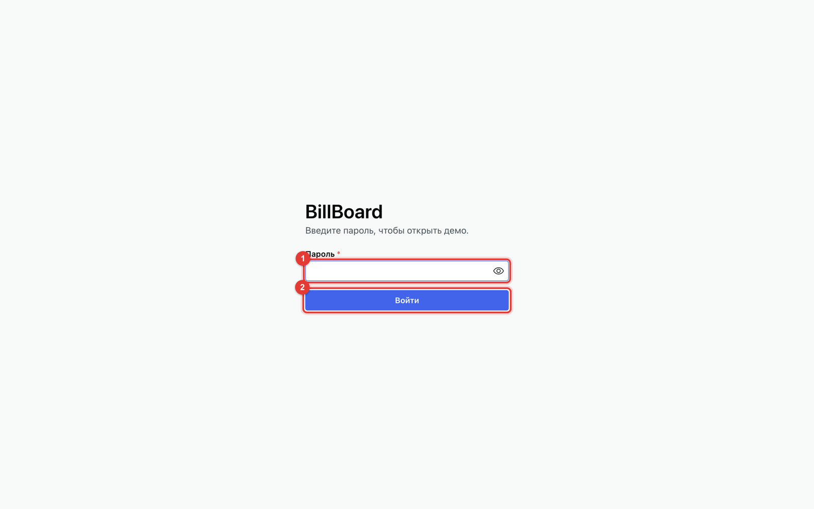
- 1
Войдите как Администратор сети: — (только пароль).
Примечание: Имени пользователя нет. Для входа нужен общий пароль. Его передали отдельно. Если вы уже вошли, пропустите этот шаг.
- 2
Введите общий пароль в поле «Пароль» 1.
- 3
Нажмите «Войти» 2.
Ожидаемый результат: Открывается страница «Главная».
Вход и страница «Главная»
2 / 2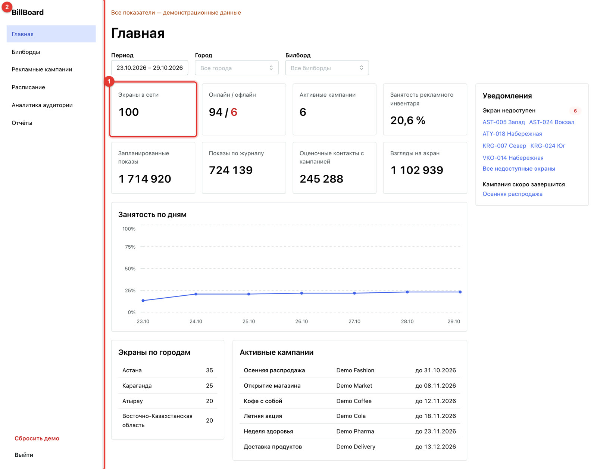
- 4
Посмотрите карточку «Экраны в сети» 1.
Ожидаемый результат: В сети 100 экранов.
- 5
Посмотрите левое меню 2.
Ожидаемый результат: В меню шесть разделов: «Главная», «Билборды», «Рекламные кампании», «Расписание», «Аналитика аудитории», «Отчёты».
Билборды: фильтр по Астане
1 / 2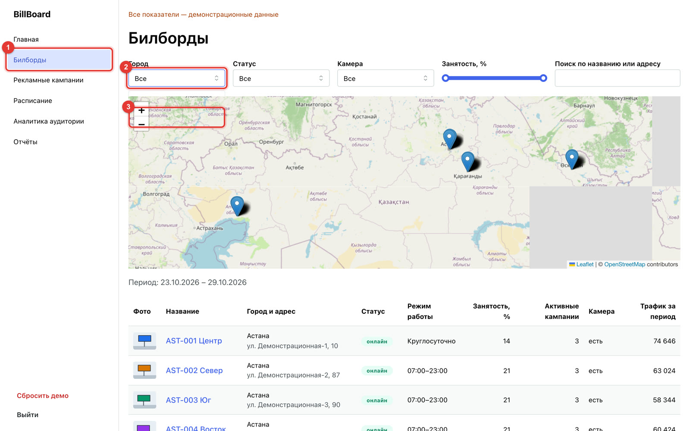
- 1
Войдите как Администратор сети: — (только пароль).
Примечание: Имени пользователя нет. Для входа нужен общий пароль. Его передали отдельно. Если вы уже вошли, пропустите этот шаг.
- 2
Нажмите «Билборды» в левом меню 1.
Ожидаемый результат: Открывается список из 100 билбордов.
- 3
Нажмите на поле «Город» 2.
Ожидаемый результат: Открывается список городов.
- 4
Выберите «Астана» 3.
Ожидаемый результат: В списке остаются только экраны Астаны.
Билборды: фильтр по Астане
2 / 2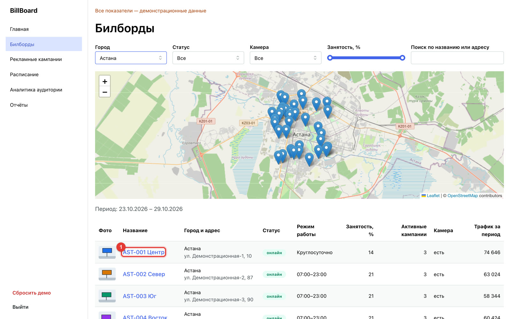
- 5
Нажмите на название билборда «AST-001» 1.
Ожидаемый результат: Открывается карточка билборда.
Карточка билборда: занятость, расписание, аудитория
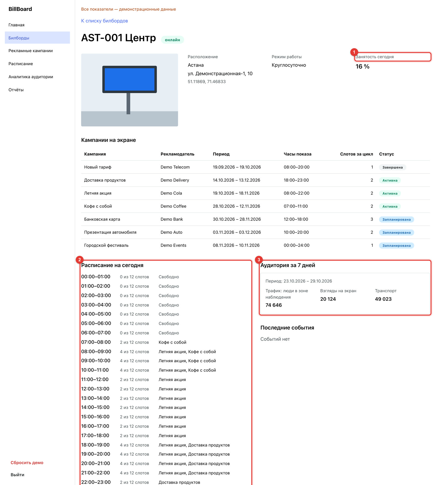
- 1
Войдите как Администратор сети: — (только пароль).
Примечание: Имени пользователя нет. Для входа нужен общий пароль. Его передали отдельно. Если вы уже вошли, пропустите этот шаг.
- 2
Посмотрите блок «Занятость сегодня» 1.
Ожидаемый результат: Видна доля занятых слотов.
- 3
Посмотрите блок «Расписание на сегодня» 2.
Ожидаемый результат: Видны слоты по часам.
- 4
Посмотрите блок «Аудитория за 7 дней» 3.
Ожидаемый результат: Видны трафик и взгляды на экран.
Работайте с карточкой, которую вы открыли на шаге 2.
Новая кампания: ввод данных
1 / 5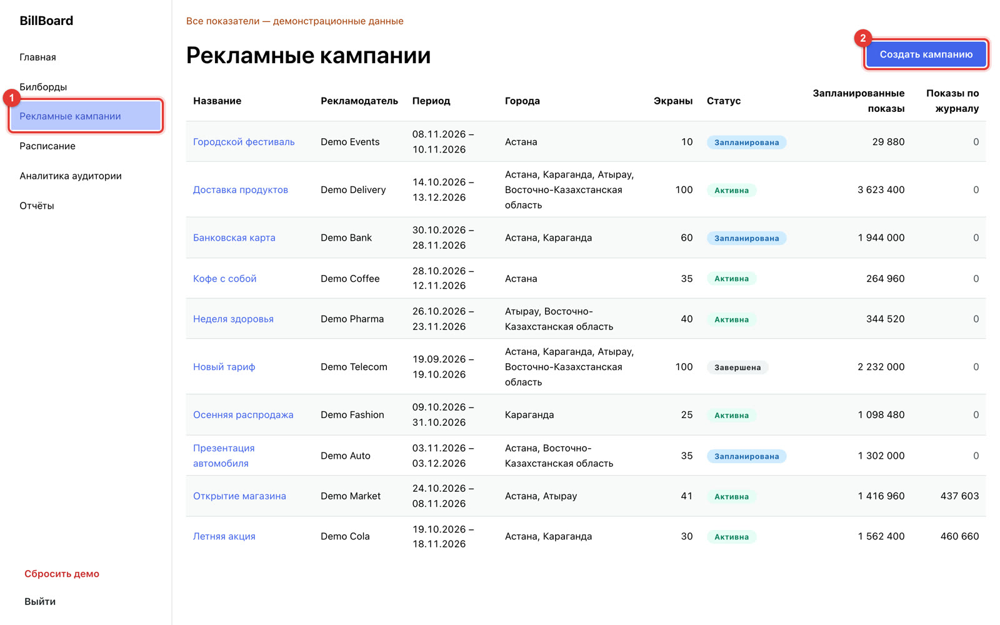
- 1
Войдите как Администратор сети: — (только пароль).
Примечание: Имени пользователя нет. Для входа нужен общий пароль. Его передали отдельно. Если вы уже вошли, пропустите этот шаг.
- 2
Нажмите «Рекламные кампании» в левом меню 1.
Ожидаемый результат: Открывается список кампаний.
- 3
Нажмите «Создать кампанию» 2.
Ожидаемый результат: Открывается форма «Новая кампания».
Новая кампания: ввод данных
2 / 5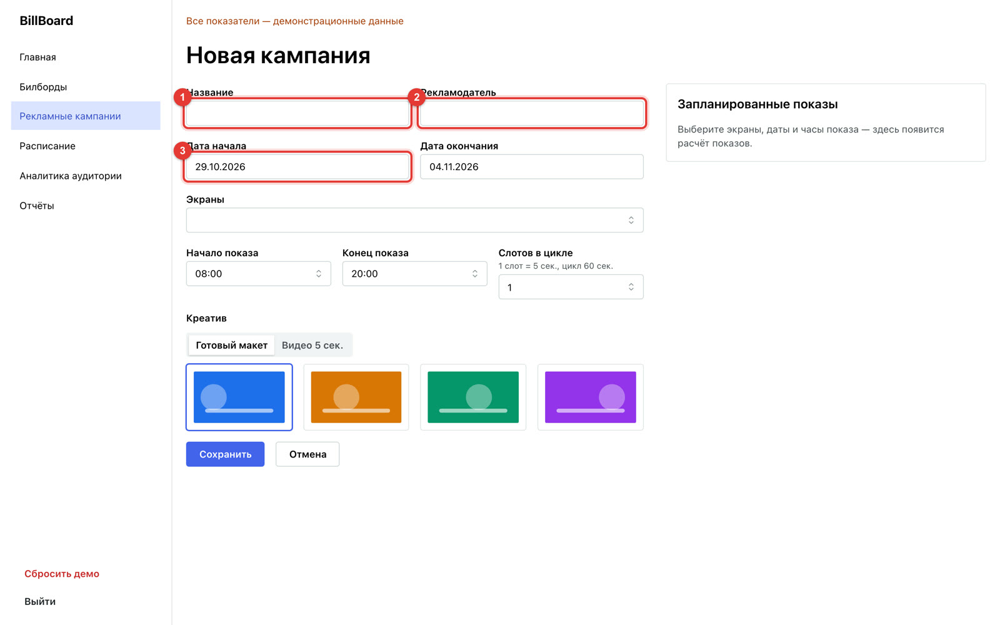
- 4
Введите «Весенняя распродажа» в поле «Название» 1.
- 5
Введите «Арлан Кофе» в поле «Рекламодатель» 2.
- 6
Нажмите «Дата начала» 3.
Ожидаемый результат: Открывается календарь.
Новая кампания: ввод данных
3 / 5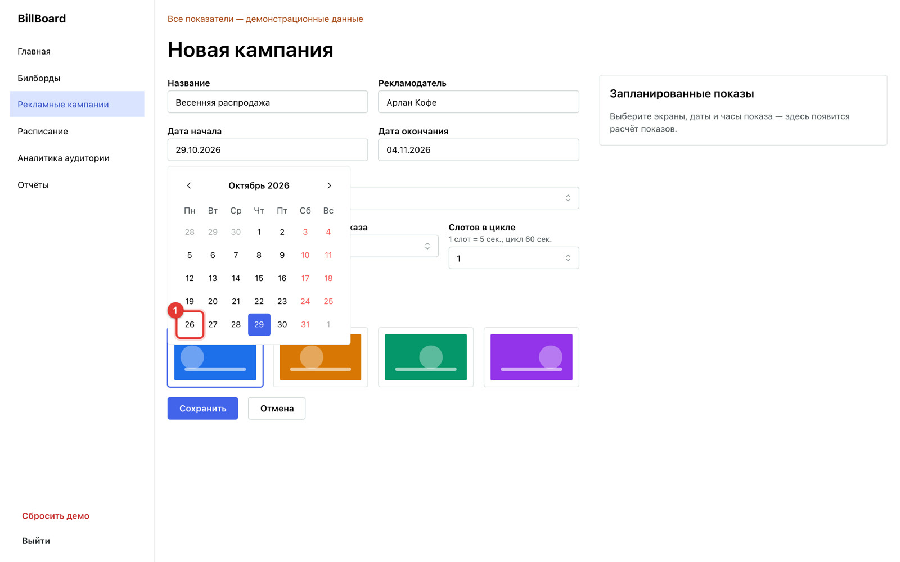
- 7
Выберите в календаре день на три дня раньше сегодняшнего 1.
Ожидаемый результат: Дата появляется в поле «Дата начала».
Примечание: Так у кампании есть прошедшие дни. Они нужны для шага 11.
Новая кампания: ввод данных
4 / 5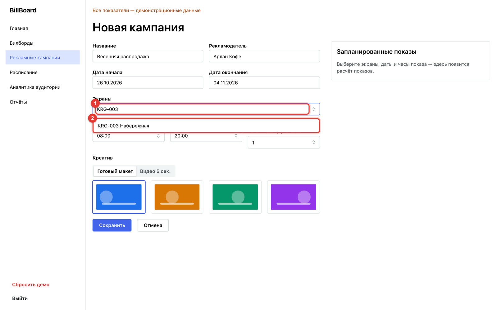
- 8
Введите KRG-003 в поле «Экраны» 1.
- 9
Выберите KRG-003 в списке 2.
Ожидаемый результат: Экран добавлен в кампанию.
Новая кампания: ввод данных
5 / 5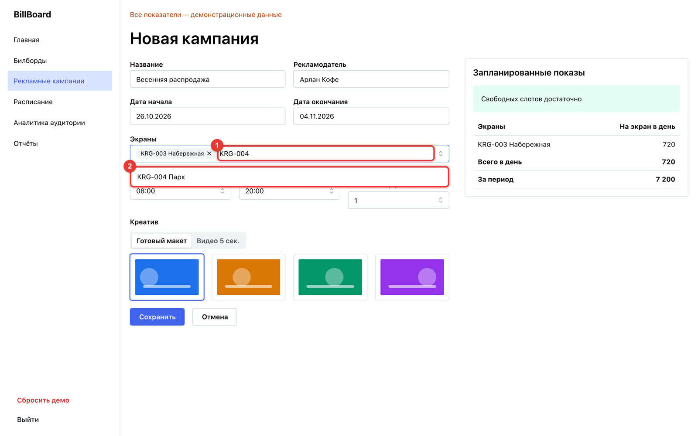
- 10
Введите KRG-004 в поле «Экраны» 1.
- 11
Выберите KRG-004 в списке 2.
- 12
Введите KRG-005 в поле «Экраны» 1.
- 13
Выберите KRG-005 в списке 2.
Ожидаемый результат: В кампании три экрана.
Свободные слоты и плановые показы
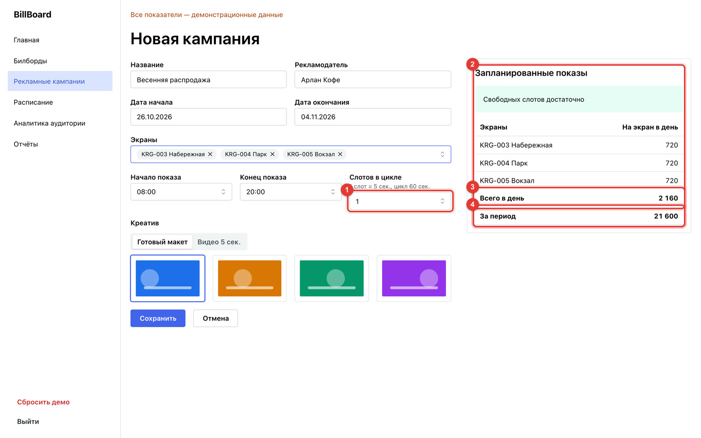
- 1
Войдите как Администратор сети: — (только пароль).
Примечание: Имени пользователя нет. Для входа нужен общий пароль. Его передали отдельно. Если вы уже вошли, пропустите этот шаг.
- 2
Посмотрите поле «Слотов в цикле» 1.
Ожидаемый результат: Выбран один слот из 12 в минутном цикле.
- 3
Посмотрите блок «Запланированные показы» 2.
Ожидаемый результат: Показано «Свободных слотов достаточно».
- 4
Посмотрите строку «Всего в день» 3.
Ожидаемый результат: Видно число плановых показов за день.
- 5
Посмотрите строку «За период» 4.
Ожидаемый результат: Видно число плановых показов за весь период.
Работайте с формой, которую вы заполнили на шаге 4.
Нехватка слотов: сохранение заблокировано
1 / 2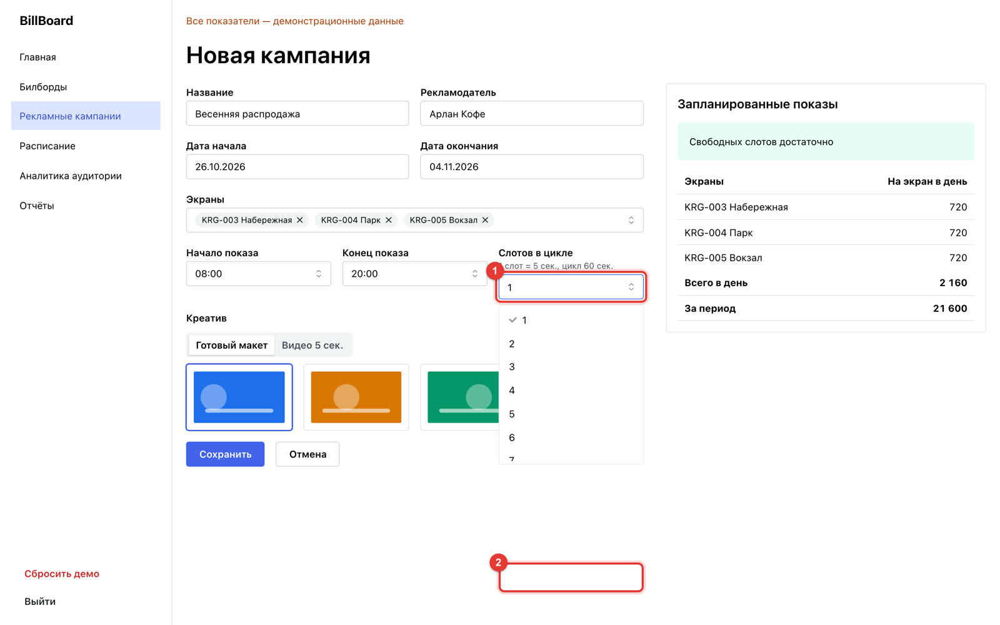
- 1
Войдите как Администратор сети: — (только пароль).
Примечание: Имени пользователя нет. Для входа нужен общий пароль. Его передали отдельно. Если вы уже вошли, пропустите этот шаг.
- 2
Нажмите на поле «Слотов в цикле» 1.
Ожидаемый результат: Открывается список от 1 до 12.
- 3
Выберите «12» 2.
Ожидаемый результат: Появляется сообщение «Недостаточно свободных слотов».
Нехватка слотов: сохранение заблокировано
2 / 2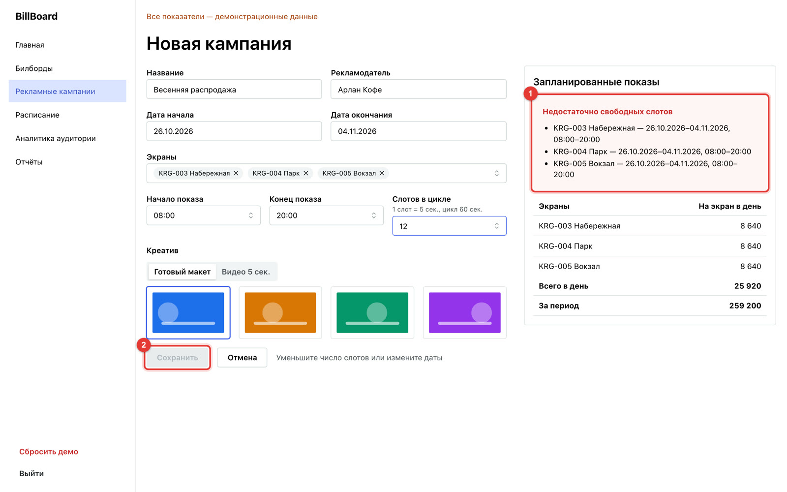
- 4
Посмотрите сообщение «Недостаточно свободных слотов» 1.
Ожидаемый результат: В сообщении названы экраны и часы, где слотов не хватает.
- 5
Посмотрите кнопку «Сохранить» 2.
Ожидаемый результат: Кнопка неактивна. Рядом стоит подсказка «Уменьшите число слотов или измените даты».
Сохранение кампании
1 / 3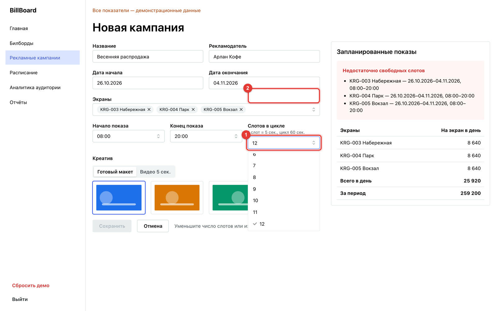
- 1
Войдите как Администратор сети: — (только пароль).
Примечание: Имени пользователя нет. Для входа нужен общий пароль. Его передали отдельно. Если вы уже вошли, пропустите этот шаг.
- 2
Нажмите на поле «Слотов в цикле» 1.
Ожидаемый результат: Открывается список от 1 до 12.
- 3
Выберите «1» 2.
Ожидаемый результат: Появляется «Свободных слотов достаточно».
Сохранение кампании
2 / 3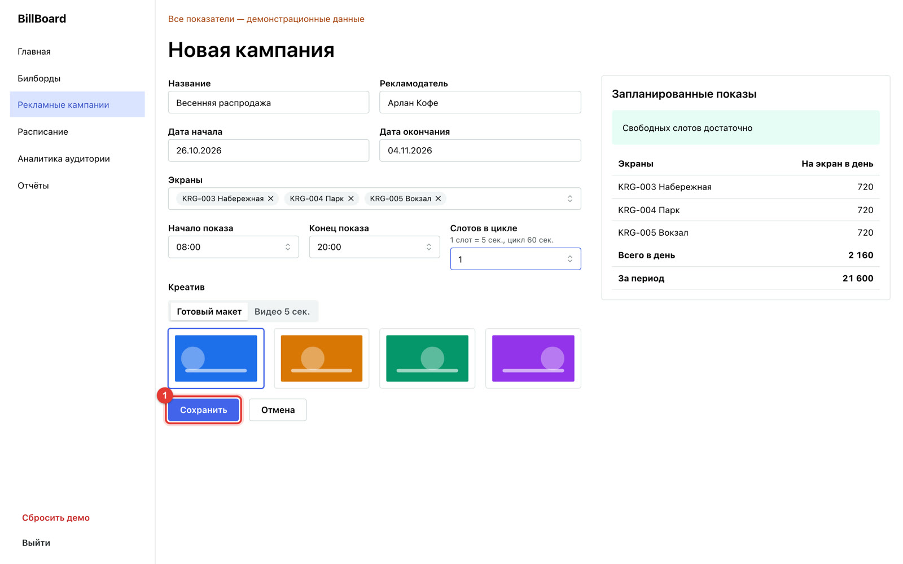
- 4
Нажмите «Сохранить» 1.
Ожидаемый результат: Открывается список кампаний.
Сохранение кампании
3 / 3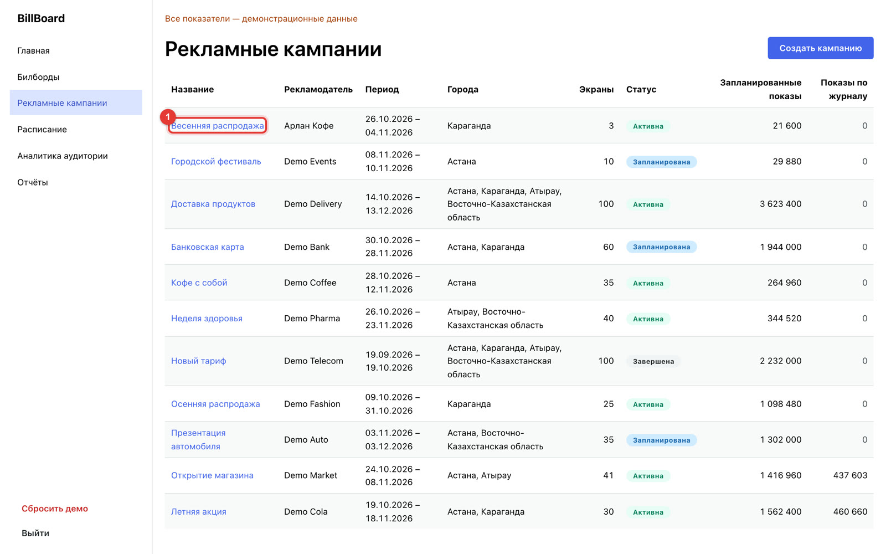
- 5
Обновите страницу в браузере.
Ожидаемый результат: Страница загружается заново.
- 6
Найдите кампанию «Весенняя распродажа» в списке 1.
Ожидаемый результат: Кампания осталась в списке после обновления.
Расписание выбранного экрана
1 / 4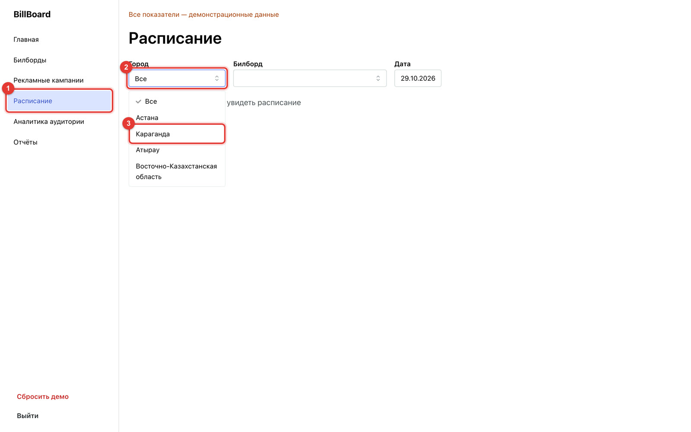
- 1
Войдите как Администратор сети: — (только пароль).
Примечание: Имени пользователя нет. Для входа нужен общий пароль. Его передали отдельно. Если вы уже вошли, пропустите этот шаг.
- 2
Нажмите «Расписание» в левом меню 1.
Ожидаемый результат: Открывается страница «Расписание».
- 3
Нажмите на поле «Город» 2.
Ожидаемый результат: Открывается список городов.
- 4
Выберите «Караганда» 3.
Расписание выбранного экрана
2 / 4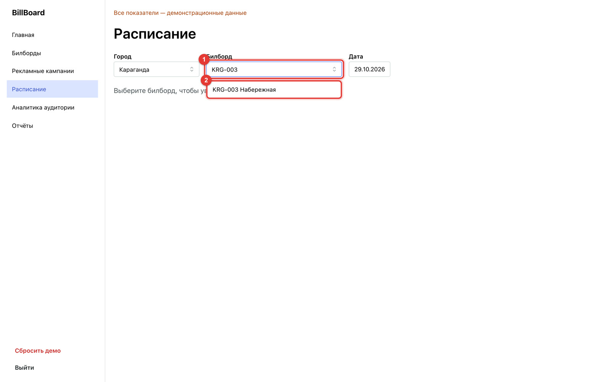
- 5
Введите KRG-003 в поле «Билборд» 1.
- 6
Выберите KRG-003 в списке 2.
Ожидаемый результат: Открывается расписание экрана по часам.
Расписание выбранного экрана
3 / 4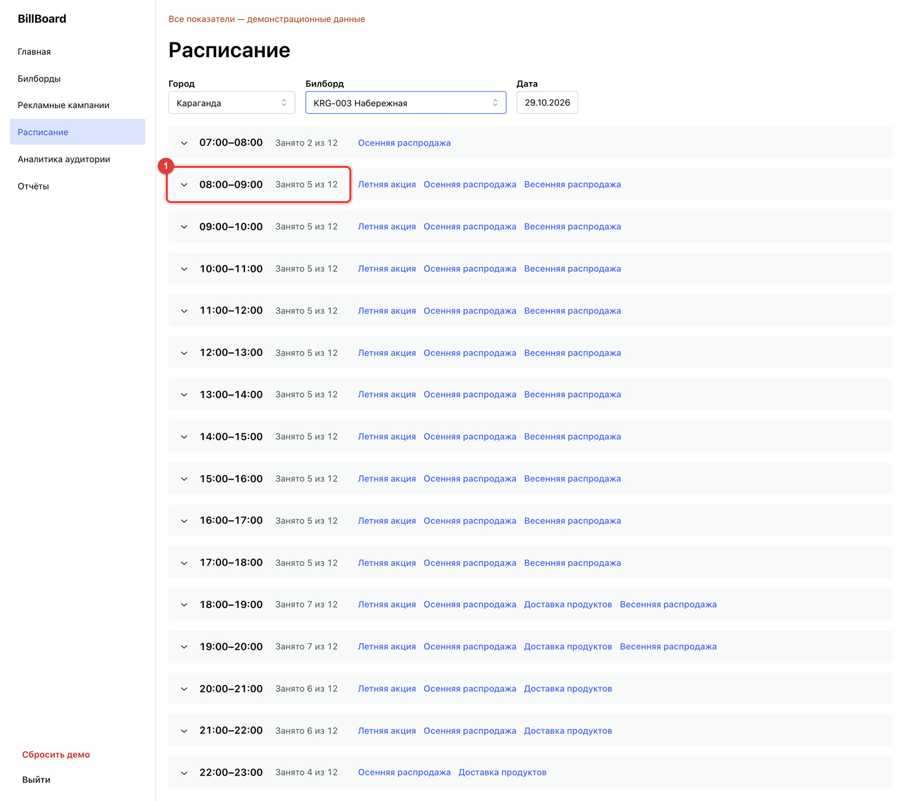
- 7
Нажмите на час «08:00–09:00» 1.
Ожидаемый результат: Открывается «Минутный цикл».
Расписание выбранного экрана
4 / 4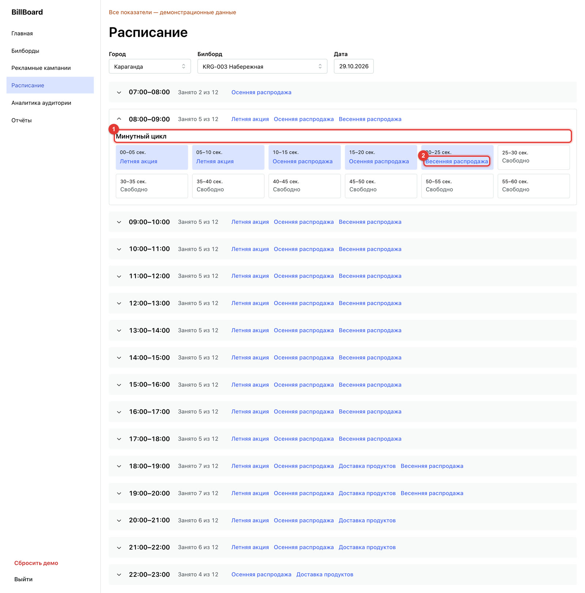
- 8
Посмотрите блок «Минутный цикл» 1.
Ожидаемый результат: Цикл состоит из слотов по пять секунд: от «00–05 сек.» до «55–60 сек.».
- 9
Найдите кампанию «Весенняя распродажа» в слотах 2.
Ожидаемый результат: Новая кампания стоит в своих слотах.
Отчёт по кампании
1 / 2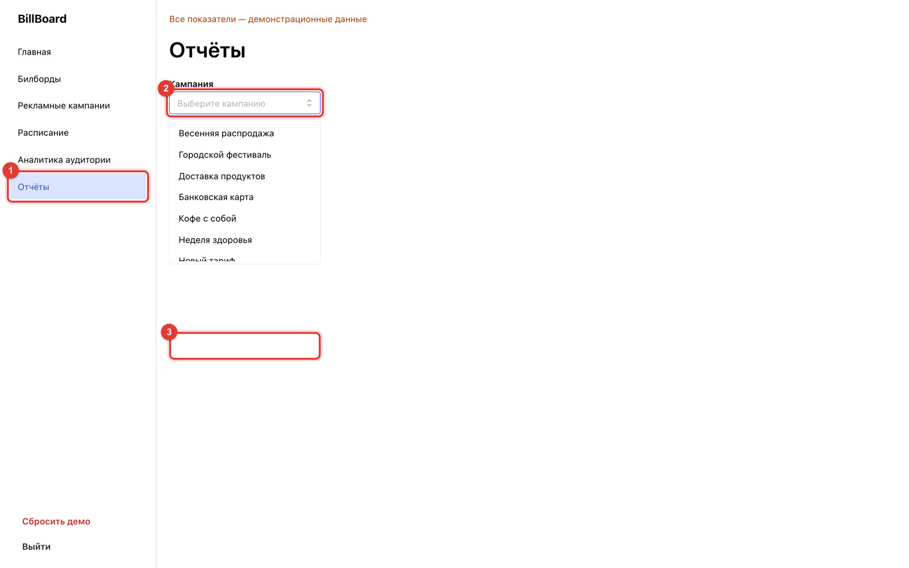
- 1
Войдите как Администратор сети: — (только пароль).
Примечание: Имени пользователя нет. Для входа нужен общий пароль. Его передали отдельно. Если вы уже вошли, пропустите этот шаг.
- 2
Нажмите «Отчёты» в левом меню 1.
Ожидаемый результат: Открывается страница «Отчёты».
- 3
Нажмите на поле «Кампания» 2.
Ожидаемый результат: Открывается список кампаний.
- 4
Выберите «Летняя акция» 3.
Ожидаемый результат: Открывается отчёт по кампании.
Отчёт по кампании
2 / 2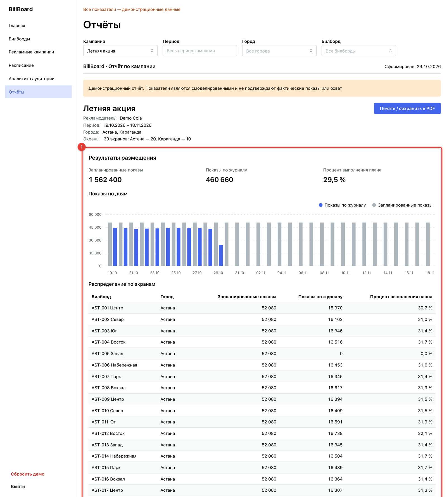
- 5
Посмотрите блок «Результаты размещения» 1.
Ожидаемый результат: Видны «Запланированные показы», «Показы по журналу» и «Процент выполнения плана».
- 6
Посмотрите блок «Аналитика экранов» 2.
Ожидаемый результат: Блок стоит отдельно от результатов размещения.
Печать и сохранение в PDF
1 / 2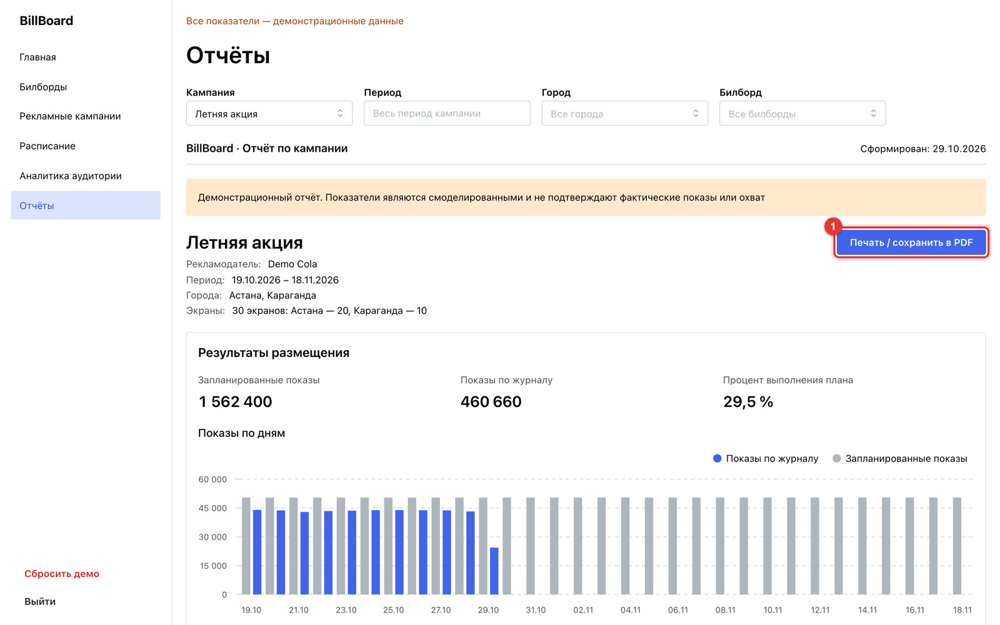
- 1
Войдите как Администратор сети: — (только пароль).
Примечание: Имени пользователя нет. Для входа нужен общий пароль. Его передали отдельно. Если вы уже вошли, пропустите этот шаг.
- 2
Нажмите «Печать / сохранить в PDF» 1.
Ожидаемый результат: Открывается окно печати браузера.
Примечание: В окне печати выберите «Сохранить как PDF», чтобы получить файл.
Работайте с отчётом «Летняя акция», который вы открыли на шаге 9.
Печать и сохранение в PDF
2 / 2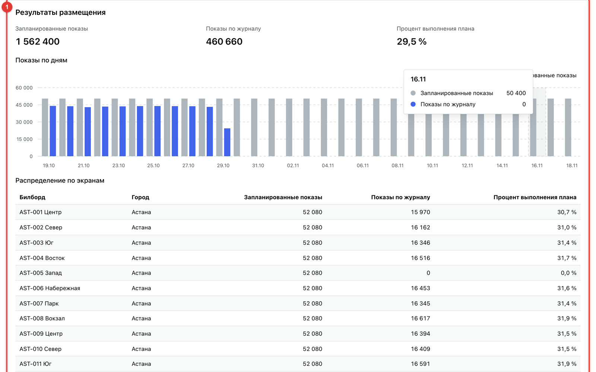
- 3
Посмотрите макет печати 1.
Ожидаемый результат: В макете нет меню, фильтров и кнопки печати. Остаётся отчёт.
Моделирование показов и отчёт новой кампании
1 / 4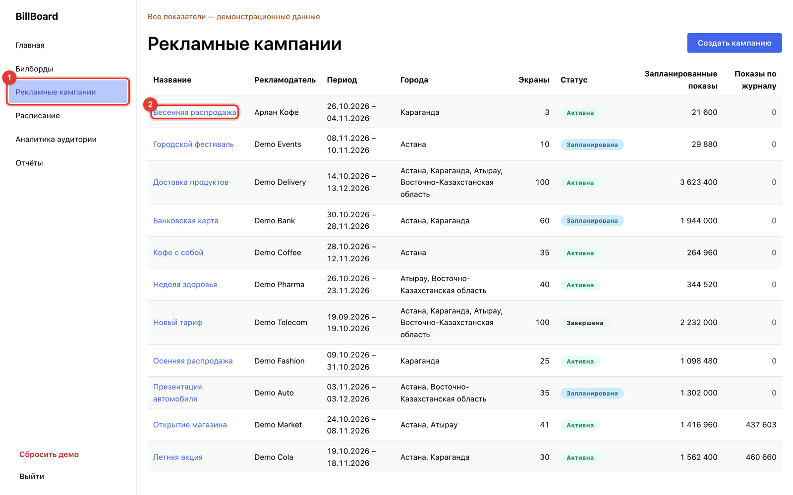
- 1
Войдите как Администратор сети: — (только пароль).
Примечание: Имени пользователя нет. Для входа нужен общий пароль. Его передали отдельно. Если вы уже вошли, пропустите этот шаг.
- 2
Нажмите «Рекламные кампании» в левом меню 1.
Ожидаемый результат: Открывается список кампаний.
- 3
Нажмите на название «Весенняя распродажа» 2.
Ожидаемый результат: Открывается карточка кампании.
Моделирование показов и отчёт новой кампании
2 / 4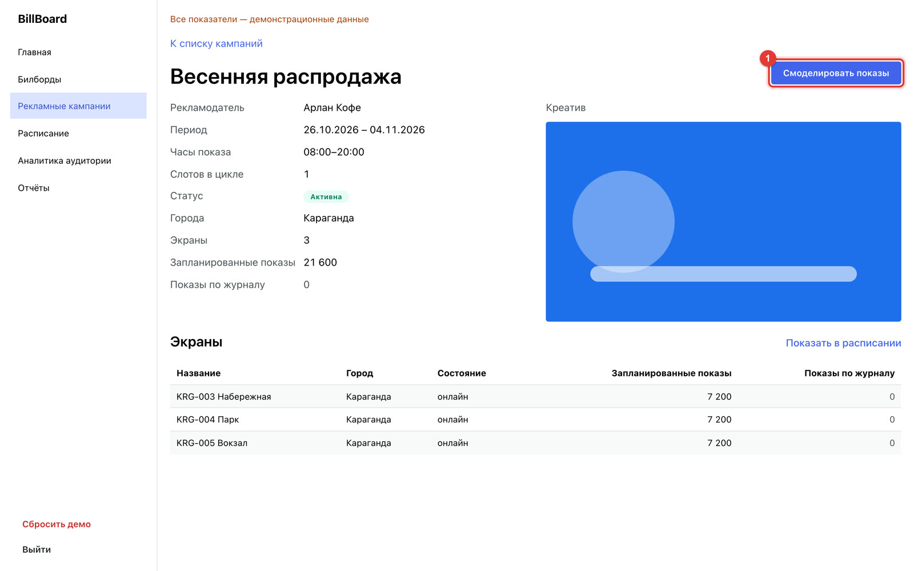
- 4
Нажмите «Смоделировать показы» 1.
Ожидаемый результат: Появляется сообщение «Показы смоделированы» с датами.
Моделирование показов и отчёт новой кампании
3 / 4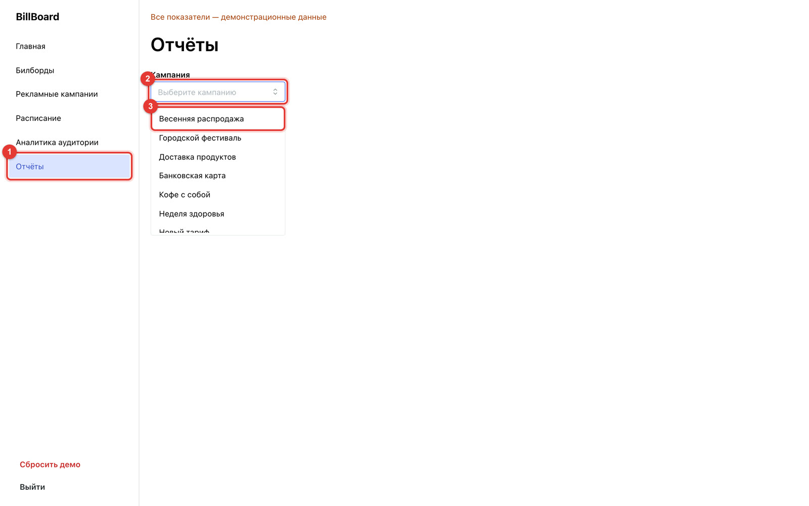
- 5
Нажмите «Отчёты» в левом меню 1.
Ожидаемый результат: Открывается страница «Отчёты».
- 6
Нажмите на поле «Кампания» 2.
- 7
Выберите «Весенняя распродажа» 3.
Ожидаемый результат: Открывается отчёт новой кампании.
Моделирование показов и отчёт новой кампании
4 / 4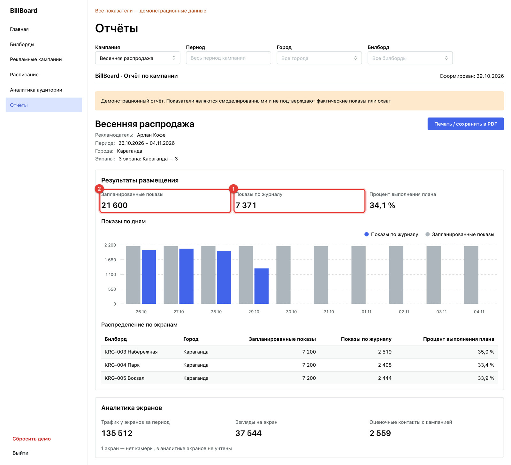
- 8
Посмотрите значение «Показы по журналу» 1.
Ожидаемый результат: Показы по журналу появились.
- 9
Посмотрите значение «Запланированные показы» 2.
Ожидаемый результат: Показов по журналу не больше, чем запланировано.
Главная: фильтры и уведомления
1 / 2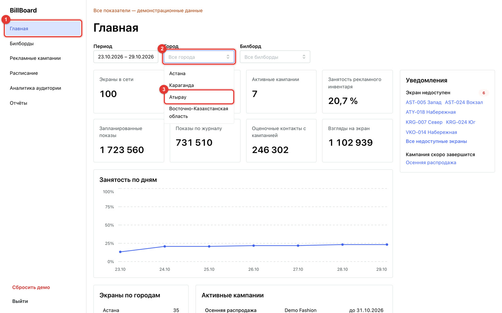
- 1
Войдите как Администратор сети: — (только пароль).
Примечание: Имени пользователя нет. Для входа нужен общий пароль. Его передали отдельно. Если вы уже вошли, пропустите этот шаг.
- 2
Нажмите «Главная» в левом меню 1.
Ожидаемый результат: Открывается страница «Главная».
- 3
Нажмите на поле «Город» 2.
Ожидаемый результат: Открывается список городов.
- 4
Выберите «Атырау» 3.
Ожидаемый результат: Показатели пересчитываются для выбранного города.
Главная: фильтры и уведомления
2 / 2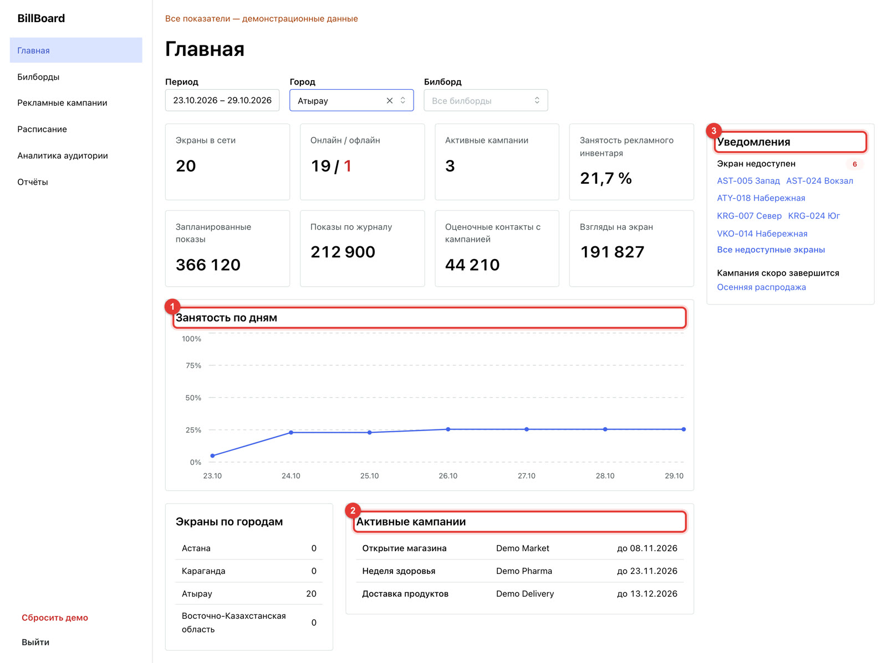
- 5
Посмотрите блок «Занятость по дням» 1.
Ожидаемый результат: Видна занятость по дням для выбранного города.
- 6
Посмотрите блок «Активные кампании» 2.
- 7
Посмотрите блок «Уведомления» 3.
Ожидаемый результат: Видны недоступные экраны и кампании, которые скоро завершатся.
Билборды: фильтр по камере
1 / 3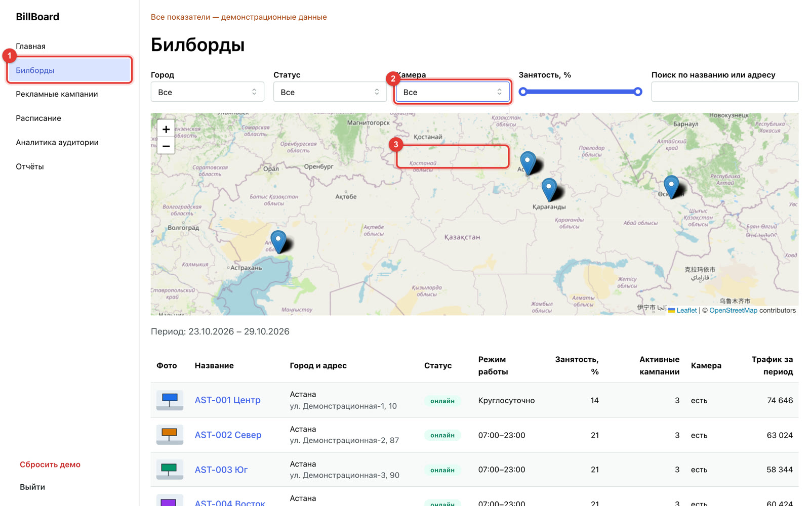
- 1
Войдите как Администратор сети: — (только пароль).
Примечание: Имени пользователя нет. Для входа нужен общий пароль. Его передали отдельно. Если вы уже вошли, пропустите этот шаг.
- 2
Нажмите «Билборды» в левом меню 1.
Ожидаемый результат: Открывается список билбордов.
- 3
Нажмите на поле «Камера» 2.
Ожидаемый результат: Открывается список значений.
- 4
Выберите «нет» 3.
Ожидаемый результат: В списке остаются экраны без камеры.
Билборды: фильтр по камере
2 / 3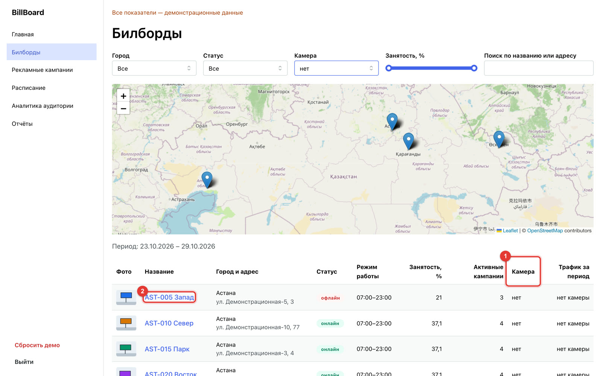
- 5
Посмотрите столбец «Камера» 1.
Ожидаемый результат: У всех экранов в списке стоит «нет».
- 6
Нажмите на название первого билборда в списке 2.
Ожидаемый результат: Открывается карточка билборда.
Билборды: фильтр по камере
3 / 3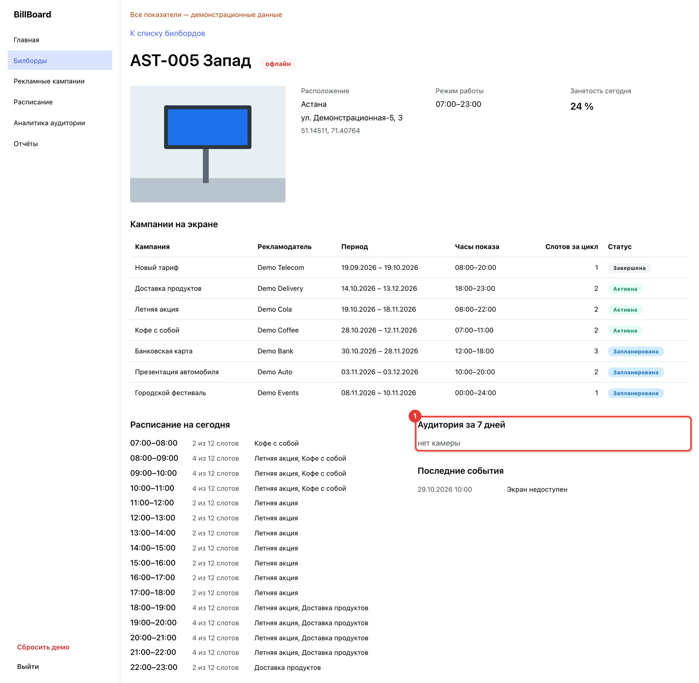
- 7
Посмотрите блок «Аудитория за 7 дней» 1.
Ожидаемый результат: В блоке стоит пометка «нет камеры». Данных об аудитории нет.
Расписание: кампания в слотах
1 / 3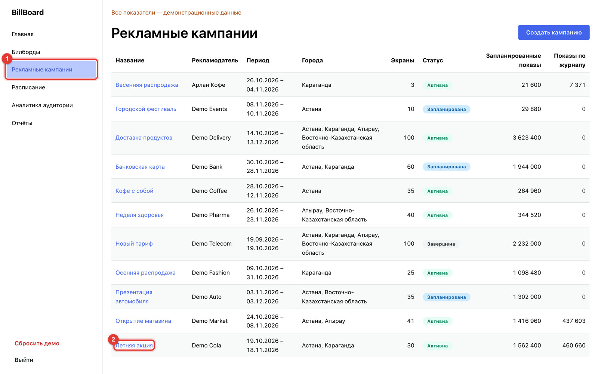
- 1
Войдите как Администратор сети: — (только пароль).
Примечание: Имени пользователя нет. Для входа нужен общий пароль. Его передали отдельно. Если вы уже вошли, пропустите этот шаг.
- 2
Нажмите «Рекламные кампании» в левом меню 1.
Ожидаемый результат: Открывается список кампаний.
- 3
Нажмите на название «Летняя акция» 2.
Ожидаемый результат: Открывается карточка кампании.
Расписание: кампания в слотах
2 / 3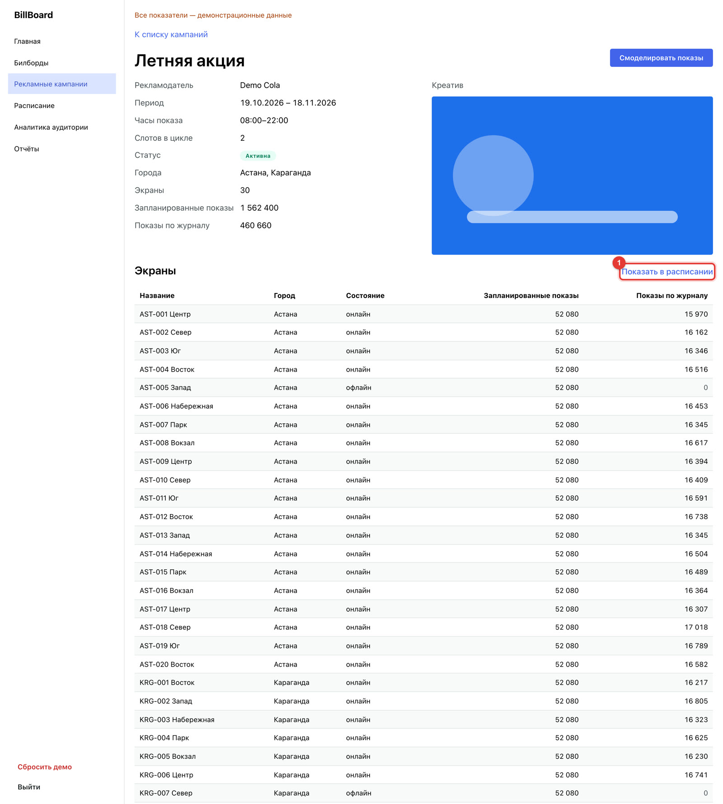
- 4
Нажмите «Показать в расписании» 1.
Ожидаемый результат: Открывается «Расписание» с выделенной кампанией.
Расписание: кампания в слотах
3 / 3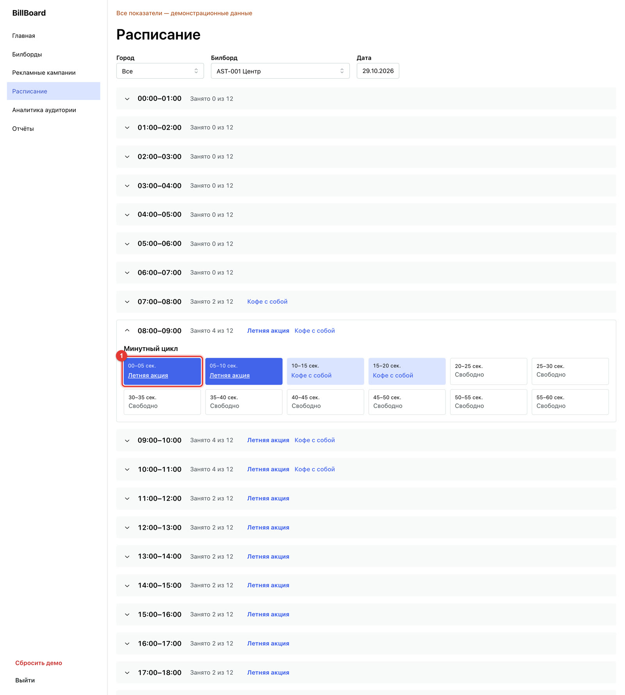
- 5
Найдите выделенный слот кампании 1.
Ожидаемый результат: Выделенный слот стоит в открытом часе.
Аналитика аудитории
1 / 2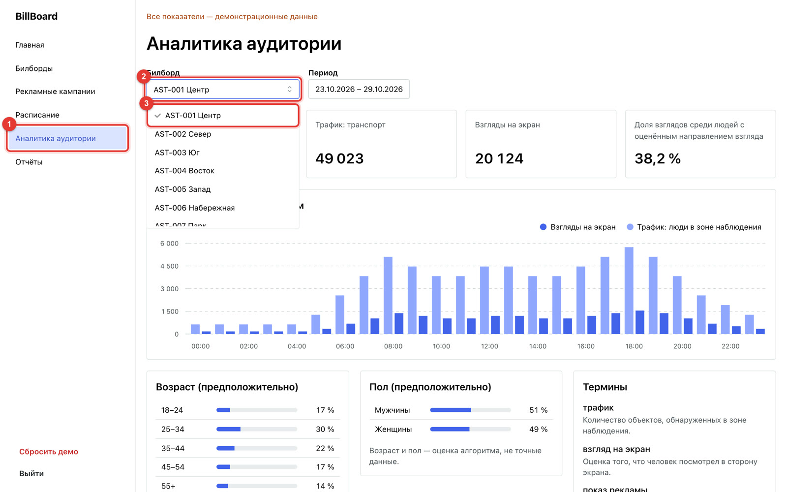
- 1
Войдите как Администратор сети: — (только пароль).
Примечание: Имени пользователя нет. Для входа нужен общий пароль. Его передали отдельно. Если вы уже вошли, пропустите этот шаг.
- 2
Нажмите «Аналитика аудитории» в левом меню 1.
Ожидаемый результат: Открывается страница «Аналитика аудитории».
- 3
Нажмите на поле «Билборд» 2.
Ожидаемый результат: Открывается список билбордов.
- 4
Выберите «AST-001» 3.
Ожидаемый результат: Открывается аналитика выбранного экрана.
Аналитика аудитории
2 / 2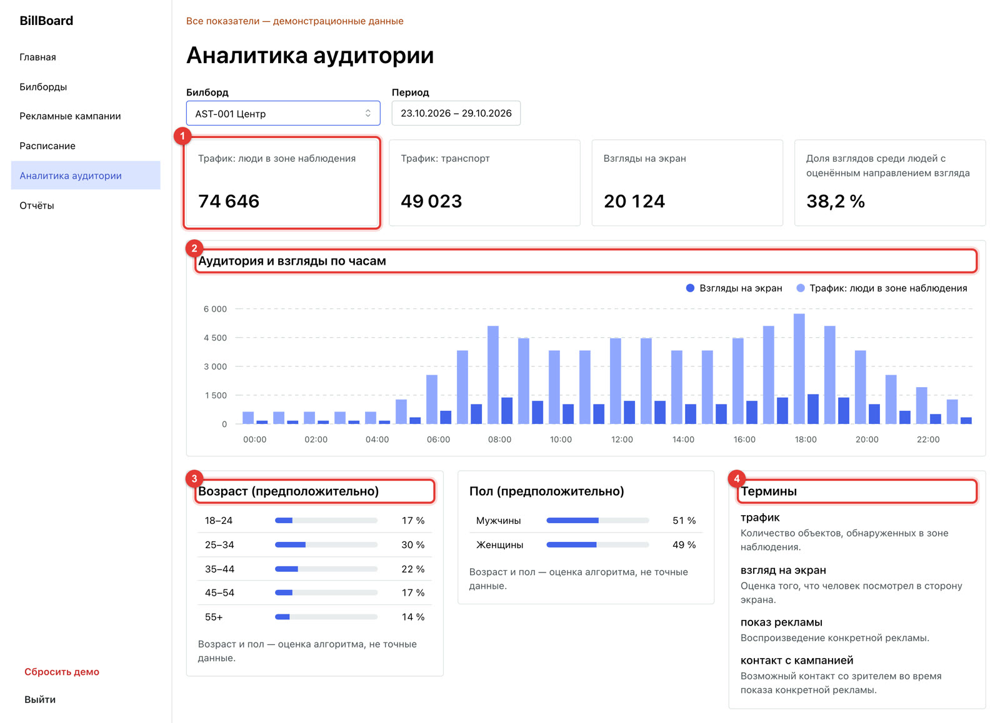
- 5
Посмотрите карточку «Трафик: люди в зоне наблюдения» 1.
Ожидаемый результат: Видно число людей в зоне наблюдения.
- 6
Посмотрите блок «Аудитория и взгляды по часам» 2.
Ожидаемый результат: Видны люди и взгляды на экран по часам.
- 7
Посмотрите блок «Возраст (предположительно)» 3.
Ожидаемый результат: Возраст — оценка алгоритма.
- 8
Посмотрите блок «Термины» 4.
Ожидаемый результат: Даны определения терминов.
Отчёты: фильтр по городу и печать
1 / 3- 1
Войдите как Администратор сети: — (только пароль).
Примечание: Имени пользователя нет. Для входа нужен общий пароль. Его передали отдельно. Если вы уже вошли, пропустите этот шаг.
- 2
Нажмите «Отчёты» в левом меню 1.
Ожидаемый результат: Открывается страница «Отчёты».
- 3
Нажмите на поле «Кампания» 2.
Ожидаемый результат: Открывается список кампаний.
- 4
Выберите «Летняя акция» 3.
Ожидаемый результат: Открывается отчёт по кампании.
Отчёты: фильтр по городу и печать
2 / 3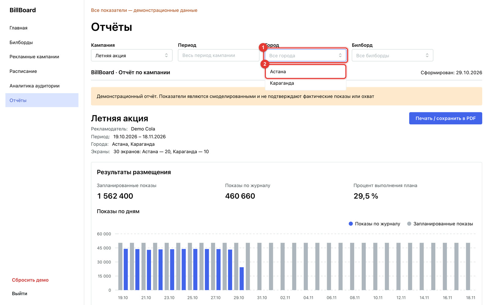
- 5
Нажмите на поле «Город» 1.
Ожидаемый результат: Открывается список городов.
- 6
Выберите «Астана» 2.
Ожидаемый результат: Отчёт пересчитывается для экранов Астаны.
Отчёты: фильтр по городу и печать
3 / 3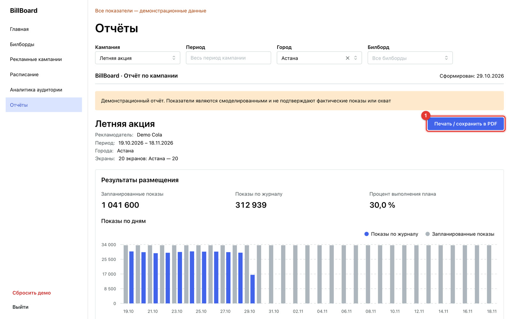
- 7
Нажмите «Печать / сохранить в PDF» 1.
Ожидаемый результат: Открывается окно печати браузера. В отчёт попадает выбранный город.
Известные замечания
Мы увидели это при подготовке руководства. Ни одно замечание не мешает сценарию. Сообщите нам, если что-то работает иначе.
| № | Где | Что вы можете увидеть | Важность | Статус |
|---|---|---|---|---|
| 1 | Вход | Когда много людей входит одновременно, вход может временно закрыться. Подождите несколько минут. | Низкая | Принято |
| 2 | Билборды | Карта экранов использует OpenStreetMap. Без интернета карта недоступна, список работает. | Низкая | Известно |
Обратная связь
Если что-то выглядит неверно или непонятно, запишите это так, чтобы мы смогли повторить.
- Где. Глава и номер шага, например Шаг 4 · 6.
- Что произошло. Что вы увидели. Скопируйте текст сообщения слово в слово.
- Что ожидали. Что должно было произойти.
- Снимок экрана. Приложите снимок, название кампании и время.
| Шаг | Запись | Что произошло | Что ожидали | Снимок экрана |
|---|---|---|---|---|